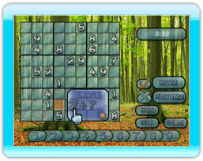
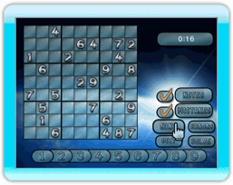
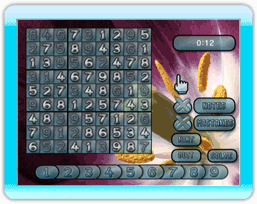

7 |
Game Options |
 |

Notes Toggling on the "Notes" option will allow you to drag and drop up to four number in the corners of an individual cell. Many Sudoku players choose to use the notes function if there are two or more possible number options for a cell.
When you wish to confirm your number in a cell with more than one noted number, press the A Button to display the confirmation menu and select the number of your choice. Note that if you have "Mistakes" disabled you cannot select incorrect numbers from the confirmation menu.
To erase a noted number within a cell, press the B Button while over the cell to bring up the "Erase Menu".
Mistakes Disabling the "Mistakes" option prevents you from placing an incorrect number on the Sudoku gameboard. If you wish to have unrestricted number placement on the gameboard, enable this option.

Hint The "Hint" option will randomly reveal a number on the gameboard.
Errors Press and hold the A Button over the "Errors" option to highlight any mistakes you might have made on the gameboard. This option is only available when "Mistakes" is enabled. 
Solve This option will complete the remainder of the puzzle for you.
Quit This option will display a pop-up menu where you can choose to either begin a new game with the same settings or return to the main menu. |
 |
 |
 |